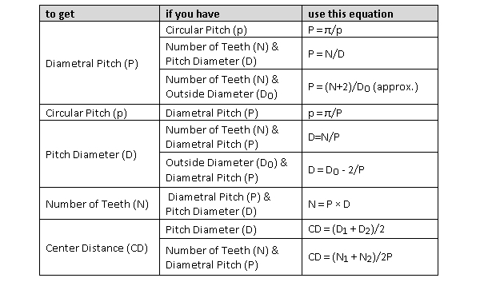
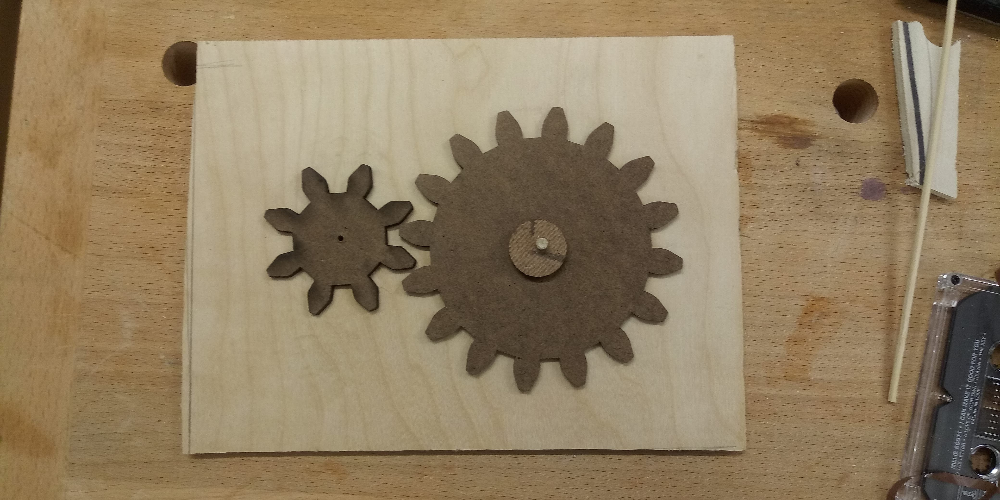

This week, I tried to make a kinetic sculpture. I began with the humble goal of putting two gears together and making them move with a motor, and ended with the even more humble result of two gears that did not, in fact, move with a motor.
It began with the sketching uo of the two gears in Fusion 360, a task that soon proved pretty impossible. I was trying to use the feature where you import from the catalogue of a parts manufacturer, but they didn't really have any range in their gear sizes, and I had to scale the gears. What I did not realize until later was that gears don't necessarily fit together once you start scaling.
I read the very useful resource that was a post from the Make blog, which detailed how to make the calculations to guarantee that gears fit together. I particularily appreciated the following table:
This helped me figure out how to draft the gears in inkscape, and after then the gears were printed! The only problem after then was figuring out how to get the motor mounted to one of the gears, something that I am still working on...
